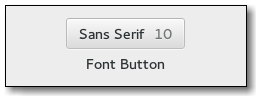

Gtk.FontButton¶
Example¶

- Subclasses:
None
Methods¶
- Inherited:
Gtk.Button (29), Gtk.Bin (1), Gtk.Container (35), Gtk.Widget (278), GObject.Object (37), Gtk.Buildable (10), Gtk.Actionable (5), Gtk.Activatable (6), Gtk.FontChooser (19)
- Structs:
Gtk.ContainerClass (5), Gtk.WidgetClass (12), GObject.ObjectClass (5)
class |
|
class |
|
|
|
|
|
|
|
|
|
|
|
|
|
|
|
|
|
|
Virtual Methods¶
- Inherited:
Gtk.Button (6), Gtk.Container (10), Gtk.Widget (82), GObject.Object (7), Gtk.Buildable (10), Gtk.Actionable (4), Gtk.Activatable (2), Gtk.FontChooser (7)
|
Properties¶
- Inherited:
Gtk.Button (9), Gtk.Container (3), Gtk.Widget (39), Gtk.Actionable (2), Gtk.Activatable (2), Gtk.FontChooser (7)
Name |
Type |
Flags |
Short Description |
|---|---|---|---|
d/r/w |
The name of the selected font |
||
r/w/en |
Whether selected font size is shown in the label |
||
r/w/en |
Whether the selected font style is shown in the label |
||
r/w |
The title of the font chooser dialog |
||
r/w/en |
Whether the label is drawn in the selected font |
||
r/w/en |
Whether the label is drawn with the selected font size |
Style Properties¶
- Inherited:
Signals¶
- Inherited:
Gtk.Button (6), Gtk.Container (4), Gtk.Widget (69), GObject.Object (1), Gtk.FontChooser (1)
Name |
Short Description |
|---|---|
The |
Fields¶
- Inherited:
Gtk.Button (6), Gtk.Container (4), Gtk.Widget (69), GObject.Object (1), Gtk.FontChooser (1)
Name |
Type |
Access |
Description |
|---|---|---|---|
button |
r |
Class Details¶
- class Gtk.FontButton(*args, **kwargs)¶
- Bases:
- Abstract:
No
- Structure:
The
Gtk.FontButtonis a button which displays the currently selected font an allows to open a font chooser dialog to change the font. It is suitable widget for selecting a font in a preference dialog.- CSS nodes
Gtk.FontButtonhas a single CSS node with name button and style class .font.- classmethod new()[source]¶
- Returns:
a new font picker widget.
- Return type:
Creates a new font picker widget.
New in version 2.4.
- classmethod new_with_font(fontname)[source]¶
- Parameters:
fontname (
str) – Name of font to display in font chooser dialog- Returns:
a new font picker widget.
- Return type:
Creates a new font picker widget.
New in version 2.4.
- get_font_name()[source]¶
- Returns:
an internal copy of the font name which must not be freed.
- Return type:
Retrieves the name of the currently selected font. This name includes style and size information as well. If you want to render something with the font, use this string with
Pango.FontDescription.from_string() . If you’re interested in peeking certain values (family name, style, size, weight) just query these properties from thePango.FontDescriptionobject.New in version 2.4.
Deprecated since version 3.22: Use
Gtk.FontChooser.get_font() instead
- get_show_size()[source]¶
- Returns:
whether the font size will be shown in the label.
- Return type:
Returns whether the font size will be shown in the label.
New in version 2.4.
- get_show_style()[source]¶
- Returns:
whether the font style will be shown in the label.
- Return type:
Returns whether the name of the font style will be shown in the label.
New in version 2.4.
- get_title()[source]¶
- Returns:
an internal copy of the title string which must not be freed.
- Return type:
Retrieves the title of the font chooser dialog.
New in version 2.4.
- get_use_font()[source]¶
- Returns:
whether the selected font is used in the label.
- Return type:
Returns whether the selected font is used in the label.
New in version 2.4.
- get_use_size()[source]¶
- Returns:
whether the selected size is used in the label.
- Return type:
Returns whether the selected size is used in the label.
New in version 2.4.
- set_font_name(fontname)[source]¶
- Parameters:
fontname (
str) – Name of font to display in font chooser dialog- Returns:
- Return type:
Sets or updates the currently-displayed font in font picker dialog.
New in version 2.4.
Deprecated since version 3.22: Use
Gtk.FontChooser.set_font() instead
- set_show_size(show_size)[source]¶
-
If show_size is
True, the font size will be displayed along with the name of the selected font.New in version 2.4.
- set_show_style(show_style)[source]¶
-
If show_style is
True, the font style will be displayed along with name of the selected font.New in version 2.4.
- set_title(title)[source]¶
- Parameters:
title (
str) – a string containing the font chooser dialog title
Sets the title for the font chooser dialog.
New in version 2.4.
- set_use_font(use_font)[source]¶
-
If use_font is
True, the font name will be written using the selected font.New in version 2.4.
- set_use_size(use_size)[source]¶
-
If use_size is
True, the font name will be written using the selected size.New in version 2.4.
- do_font_set() virtual¶
Signal Details¶
- Gtk.FontButton.signals.font_set(font_button)¶
- Signal Name:
font-set- Flags:
- Parameters:
font_button (
Gtk.FontButton) – The object which received the signal
The
::font-setsignal is emitted when the user selects a font. When handling this signal, useGtk.FontChooser.get_font() to find out which font was just selected.Note that this signal is only emitted when the user changes the font. If you need to react to programmatic font changes as well, use the notify::font signal.
New in version 2.4.
Property Details¶
- Gtk.FontButton.props.font_name¶
- Name:
font-name- Type:
- Default Value:
'Sans 12'- Flags:
The name of the currently selected font.
New in version 2.4.
Deprecated since version 3.22: Use the
Gtk.FontChooser::fontproperty instead
- Gtk.FontButton.props.show_size¶
- Name:
show-size- Type:
- Default Value:
- Flags:
If this property is set to
True, the selected font size will be shown in the label. For a more WYSIWYG way to show the selected size, see the::use-sizeproperty.New in version 2.4.
- Gtk.FontButton.props.show_style¶
- Name:
show-style- Type:
- Default Value:
- Flags:
If this property is set to
True, the name of the selected font style will be shown in the label. For a more WYSIWYG way to show the selected style, see the::use-fontproperty.New in version 2.4.
- Gtk.FontButton.props.title¶
-
The title of the font chooser dialog.
New in version 2.4.